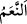
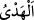

“__WORD__” tesbit edilen para miktarıyla satın alınacak kurbanlık hayvanı beyan
etmektedir. Eğer kişi kurban keserse, öldürdüğünün dengi bir hayvan cezâsını yerine
getirip, bu borçtan kurtulmuş olur. “__WORD__” lügatte deve, inek ve koyun cinsleri için
kullanılır. Sadece deve için bu kelime kullanılır; fakat yalnız inek ve koyun cinsleri için
kullanılmaz.
“Bu” öldürülene denk olduğuna “içinizden âdil iki” erkek müslüman “kişinin hüküm
vereceği, Kâbe’ye varacak bir kurban” “__WORD__” Allah Teâlâ’ya yakınlaşma gayesiyle,
Kâbe’ye hediye edilen hayvan demektir. Bu hayvanlar koyun, keçi, sığır ve devedir.
Bu kurbanın “Kâbe’ye varması” ise, onun Harem bölgesi içerisinde kurban edilmesi
demektir. Bir kimse, öldürdüğüne denk bir hayvanı satın alarak Harem bölgesi
fakirlerine verse, bütün âlimlere göre, bu caiz olmaz. Bilakis o hayvanın Harem
sınırları içerisinde boğazlanması gerekir. Boğazlandıktan sonra etlerini İmam-ı Azam’a
göre dilediği yerde dağıtabilir.
“Yahut fakirleri yedirme şeklinde bir keffaret ya da buna denk oruçtur.” Yani bu
suçu işleyen kişiye, öldürülen hayvana denk bir cezâ gerekir ki bu da ya hayvan kurban
etmek veya fakirleri yedirmek ya da bu fakirlerin sayısı kadar gün oruç tutmaktır. Bu
durumda (öldürülen hayvana) “denk olma (=mümâselet)” takdir edilecek cezâ için
ayrılmaz bir vasıf olmakta; kurbanlık hayvanın cinsi, yedirilecek yemeğin ve tutulacak
orucun miktarı bu vasfa göre takdir edilmektedir. Birinci ve ikinci cezânın miktar ve
keyfiyeti, vasıtasız olarak; üçüncü tür cezânın ise ikinci cezâ vasıtasıyla tesbit
edilmektedir. Burada suçu işleyen kişi, bu üç cezadan dilediği birisini seçmekte
serbesttir.
Bu üç cezâ türünden hangisinin tatbik edileceğine kimin karar vereceği ihtilaflıdır.
İmam-ı Azam’a ve Ebû Yûsuf’a göre bizzat suçlu istediğini seçebilir. İmam
Muhammed’e göre ise bunu belirlenen iki hakem tayin eder.
“Ta ki böylece” o avı öldüren kişi “yaptığı işin” ihramın saygınlığını zedelemiş
olmanın “vebalini” kötü sonucunu “tatsın.”
“Vebal”in asıl anlamı, nefsin sevimli göstererek teşvik ettiği bir kötü amelin sonunda
kişinin karşılaşacağı nâhoşluk ve zarardır.
“Allah geçmişi” yani bu yasak konulmadan önce, ihramda av öldürmüş olanları
“affetmiştir.”
“Kim” yasak indirildikten sonra “bu suçu tekrar işlerse, Allah ondan intikam alır.”
Yani o kimse, Allah’ın intikam aldığı kişilerden olur. Allah’ın intikamından maksat,
âhirette azâb demektir.
Keffaret konusuna gelince bazı âlimlere göre tekrar bu suçu işleyen kimseye vâcibtir.
Kimi âlimler ise âyetin zahirine bağlı kalarak keffaretin gerekli olmadığı
kanaatindedirler.
“İntikam” kelimesi asıl olarak galip gelme ve hakkını tamamen alma mânâlarına
gelmektedir. Allah Teâlâ için kullanıldığında ise, O’nun cezâlandırması ve azâba